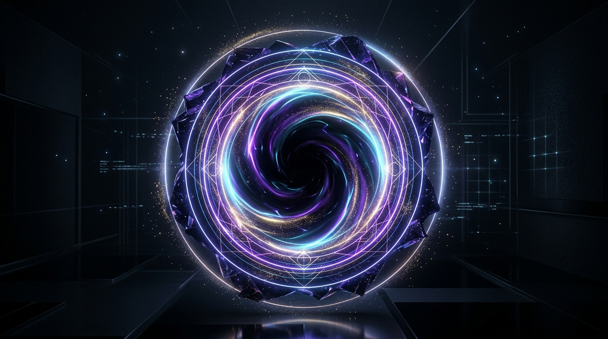

Günaydın, Gezgin ✨
"Her büyük başarı, bugün atılan odaklanmış küçük bir adımla başlar. Zihnini toparla ve akışa katıl."
Öncelikli Görevler
Günlük Alışkanlıklar
Görev & Proje Merkezi
Hedeflerinizi düzenleyin, AI ile adımlara bölün ve yüksek odakla tamamlayın.
Yapay Zeka Destekli Not Defteri
Düşüncelerinizi kaydedin, AI ile tek tıkla özetleyin ve eyleme dökün.
Derin Odak İstasyonu
Zaman bloklama, görsel pomodoro zamanlayıcısı ve sentetik ambiyans ses laboratuvarı.
Ambiyans Ses Mikseri
Web Audio APIAlışkanlık Takibi & Analitik
Süreklilik güçtür. Günlük alışkanlıklarınızı işaretleyin ve odak grafiğinizi izleyin.
Haftalık Alışkanlık Matrisi
| Alışkanlık | Pzt | Sal | Çar | Per | Cum | Cmt | Paz | Seri |
|---|
Haftalık Odak Süresi Dağılımı
Dakika Cinsinden
Zihin Mabedi (Sanctum)
Zihinsel gürültüyü yerçekimsel tekillikte yok et, sentetik ambiyans laboratuvarında nöro-akışa gir ve Stoacı farkındalıkla yaşam süreni optimize et.
Düşünce Öğütücü
Zihnini kemiren kaygıları tekilliğe fırlat.
Ambiyans Ses Laboratuvarı
Web Audio API ile gerçek zamanlı üretilen sentetik frekanslar.
🪞 Acımasız Ayna (The Alter-Ego)
Kibar yalanlar yok. Beyninin uydurduğu bahaneyi yaz; ikinci benliğin seni en çıplak gerçekle yüzleştirsin.
🌌 Çoklu Evren Simülatörü
Bir kararın iki farklı yolunu simüle et: Konfor alanında kalmak vs Cesur adımı atmak.
🌌 Canlı Zihin Sinir Ağı & İkinci Beyin Galaksisi
Zihnindeki tüm görevler, notlar, alışkanlıklar ve felsefi kararlar parlayan interaktif bir uzay ağı olarak birbirine bağlıdır.
👁️ Dijital Zihin İkizi (Digital Alter-Self)
Yazdığın notlardan, felsefi kararlarından ve arketipinden beslenen, sana tarafsız ayna tutan zihin ikizin.
Zihin İkizim
🔮 Görsel Gelecek Ağacı & Paralel Yaşam Simülatörü
Büyük yaşam yol ayrımlarını 1, 3 ve 5 yıllık alternatif dallara ayır. Finansal eğri, stres yükü ve kazanılacak yetkinlikleri kıyasla.
Şimdiki Sen (2026)
Mevcut bilgi birikimi, alışkanlıklar ve potansiyel.
☸️ 360° Bütünsel Yaşam Dengesi (Holistic Life OS)
Kariyer, sağlık, zihin, ilişkiler ve dinlenmenin uyumu. Tükenmişlik (burnout) riskini erkenden gör ve dengeyi koru.
Yaşam Çarkı Radarı
Denge: %85⏳ Chronos: Geleceğe Kapsül & Memento Mori
Zamanı sadece takip etme; gelecekteki haline vaatler mühürle, 4.000 haftalık hayat kum saatini izle ve geçmiş 30 günü film şeridi gibi tara.
Geleceğe Bir Kapsül Mühürle
Mühürlü Kapsüller Kasası
1 Kapsül🧬 Bilişsel Biyohack & Mental RAM Monitörü
Andrew Huberman nörobilim protokolleriyle dopamin ve adenozin dengeni yönet. Zeigarnik bilişsel açık döngülerini 90 saniyede sıfırla.
90 Dk Kafein Geciktirme Kuralı
Uyanınca vücuttaki adenozin doğal yollarla temizlenmeden kahve içilirse, öğleden sonra derin bir yorgunluk dalgası yaşanır. Uyanıştan sonraki ilk 90 dakika sadece su ve ışık alın.
20 Dk NSDR (Bilişsel Yenilenme)
Günün ortasında 20 dakikalık uykusuz derin dinlenme, dopamin rezervlerini %65 yeniler ve nöroplastisiteyi artırır.
Sirkadiyen Çapa Protokolü
🔬 Fikir Kaynaştırıcı & Sokratik Çıkmaz Mahkemesi
Birbirinden bağımsız kavramları birleştirip çığır açan sentezler türet. Şeytanın Avukatı kürsüsüyle karar felcini rasyonel olarak çöz.
Simya Potası: İki Farklı Fikri Birleştir
Tarihteki en büyük icatlar ve felsefi atılımlar, iki alakasız disiplinin çarpışmasından doğdu. Birleştirmek istediğin iki konuyu seç veya yaz:
📜 Kişisel Değerler Anayasası & Bilişsel Biyopsi
Marcus Aurelius ve Ray Dalio ilkeleriyle kendi değişmez anayasanı oluştur. Haftalık zihinsel adli tıp biyopsisiyle performansını analiz et.
Sarsılmaz Yaşam İlkelerim
6 İlke🧭 Anayasama Danış
Zor bir karar veya ayartıcı bir teklifle karşılaştığında, durumunu anayasa maddelerinle test et: